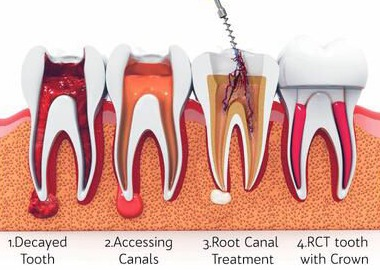

Endodontics
Root Canal Treatment

Root Canal Treatment
Root canal treatment is an often straightforward procedure to relieve dental pain and save your teeth. Patients typically need a root canal when there is inflammation or infection in the roots of a tooth. During root canal treatment, an endodontist who specializes in such treatment carefully removes the pulp inside the tooth, cleans, disinfects and shapes the root canals, and places a filling to seal the space.

Post & Core Restoration
Post and core is a dental restorative treatment that's sometimes performed after a root canal. When a significant portion of a tooth is lost due to decay, a post and core can help keep a dental crown in place. Dental crowns are put on top of teeth, to protect them from further damage or infection.